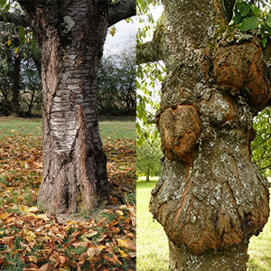

It can be hard to know as a homeowner if a tree needs to be trimmed or if the entire tree should be removed. Anytime you have any type of problem with your trees, you can always reach out to us to evaluate the health of your trees and determine the best course of action. Not all trees need to be removed. Occasionally, trimming is best. Last time, we spoke about how the location of a tree can be very influential in the decision to trim or remove a tree. There are many other factors that affect that decision. Any time you have a question about what tree service your tree needs, contact the number one tree company in Ocean County.
The Health of the Tree is Priority Number One

Aside from a tree being planted in a bad location, the health of a tree is the number one aspect that as a tree company in Ocean County, we look at to decide whether or not to remove a tree. Sometimes, sicknesses can be helped. Other times, a tree is too far gone. Unhealthy trees can not only become a safety issue, but can also spread diseases to other trees. If other trees are at risk, tree removal is the best option.
One clear indication of a tree that needs to be removed is if the tree is hollow. If you can’t tell on your own if the only healthy part of the tree remaining is the bark, give us a call. One of our tree professionals can evaluate the tree’s status.
A clearer sign that a tree should be taken down is if more than 50% of the tree is damaged or ill. Some wounds and diseases can be treated and healed if found early enough. However, if not found in time, sicknesses and diseases can quickly take over a tree. For example, a tree with oak gall might be able to be saved. But, if not taken care of soon enough, the tree will eventually need to be removed.
If you look at your tree and it looks like it wants to lay down and take a nap, it’s time to go. A tree that is unable to keep itself upright is a sign of weak or impaired roots. The roots are the foundation of a tree. A home with a faulty foundation will crumble. A tree with a weakened roots will not survive. It’s best to let these trees go and protect yourself and your property.
Other Clues You Should Call a Tree Company in Ocean County
There are many other red flags that a tree shows when it needs to be removed.
In addition to diseases, a tree that is covered in fungi or mushrooms. Although mushrooms growing near the base of a tree doesn’t always equal root problems, when fungus takes over the trunk of a tree, contact a professional to make the call.
A leaning is tree is bad. A tree covered in cracks and crevices in the trunk is just as bad. The bark of a tree is it’s first-line of defense and when that armor gets reduced, the tree will likely succumb to pests and sicknesses.
Even if you don’t catch the cracks in the trunk, you’ll start to notice when the tree starts dropping branches. Especially when you notice that all the branches on one side of a tree are gone. When this happens, it can cause a tree to fall due to uneven weight distribution. In addition, it is likely a sign that something is wrong with the tree.
If you see any of these warning signs, give us a call. You can also contact us whenever you are worried about your tree for another reason. Our tree experts can help gauge the health of your tree. Sometimes it’s the trees you aren’t worried about that have to be removed so a professional opinion is always best.